Applications
The full set of apps runs on the desktop: everyday tools, creative apps, games and a 3D runner. Launch any of them from the Start menu or a desktop icon.
Everyday apps
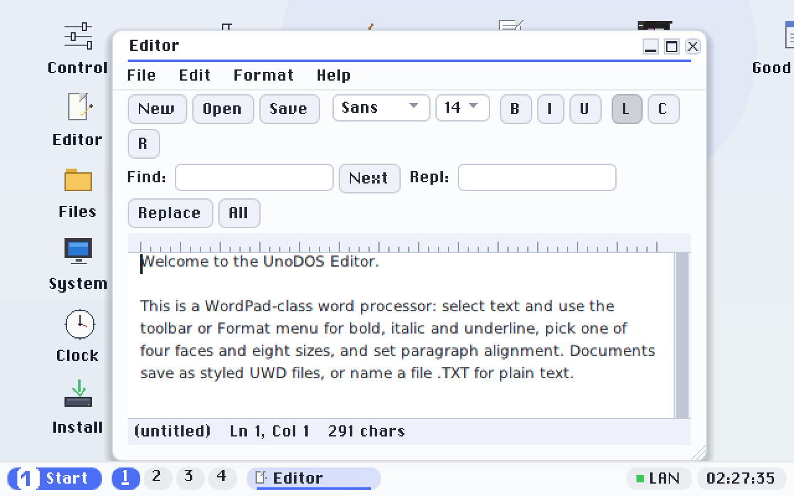
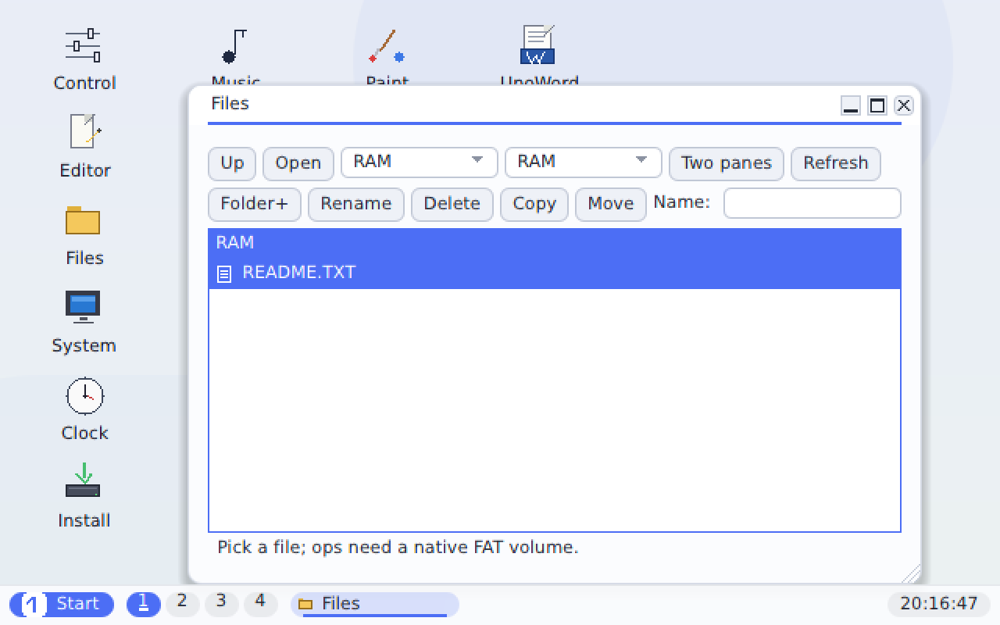
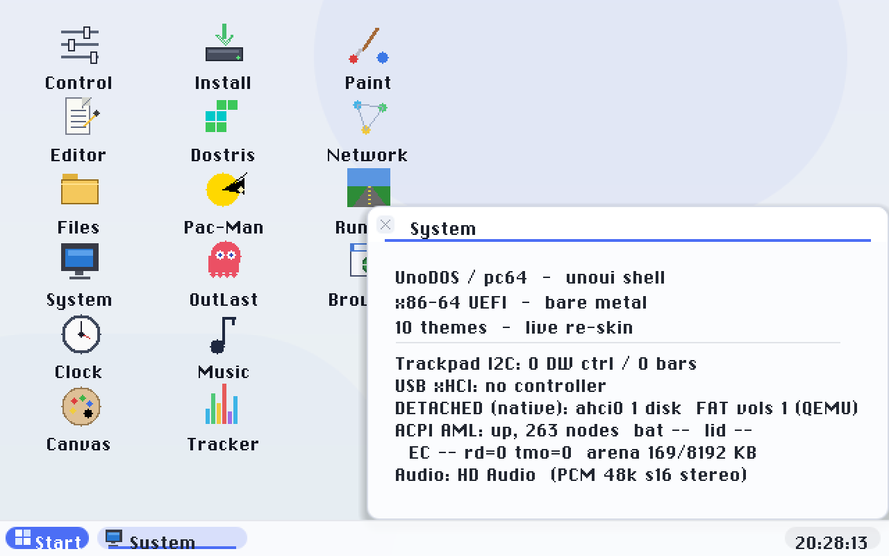
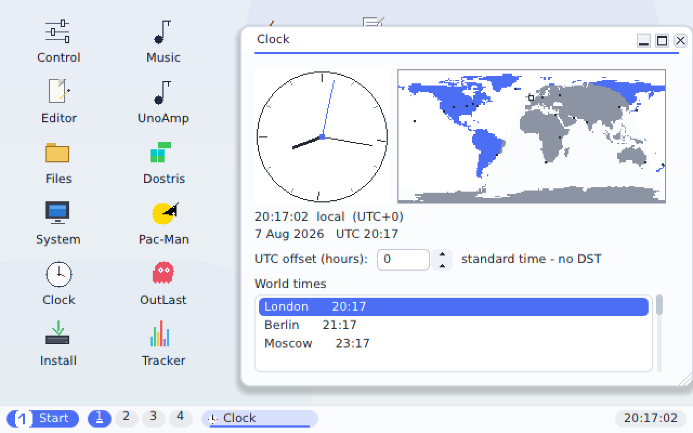
A Canvas demo shows how an app can draw freely inside its window.
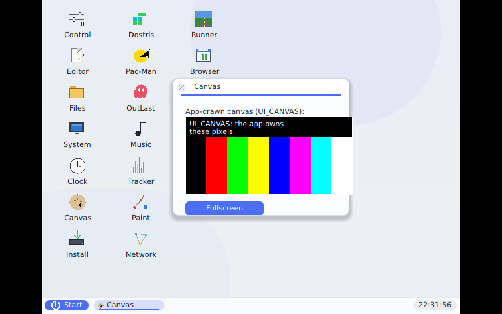
Creative tools
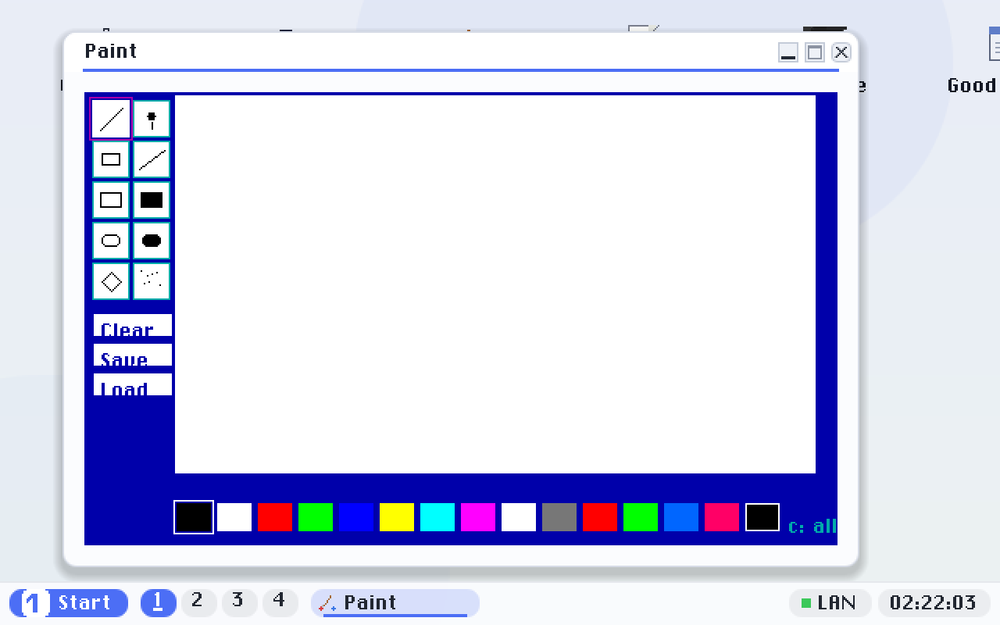
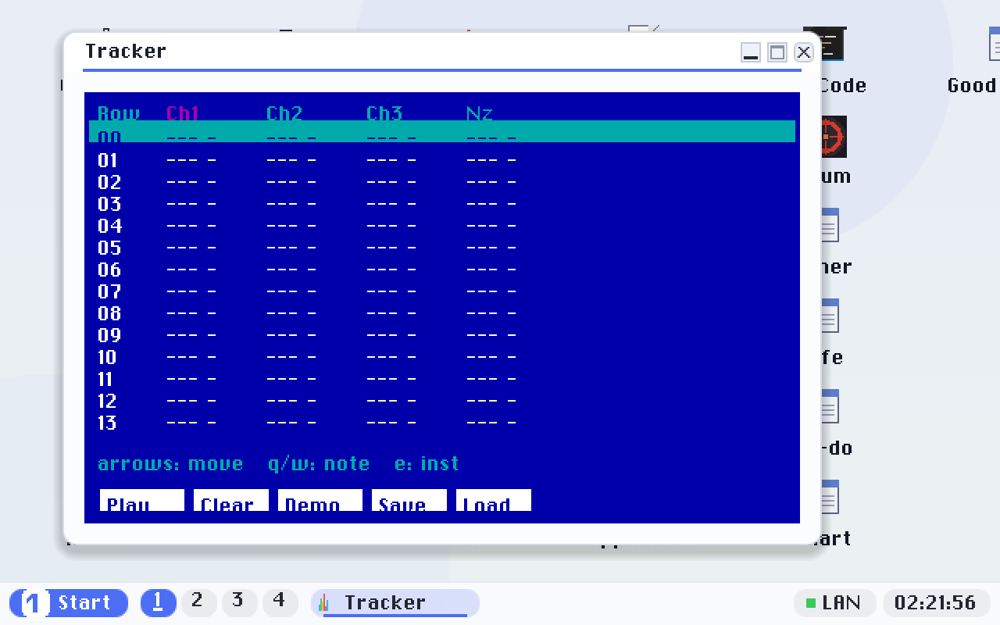
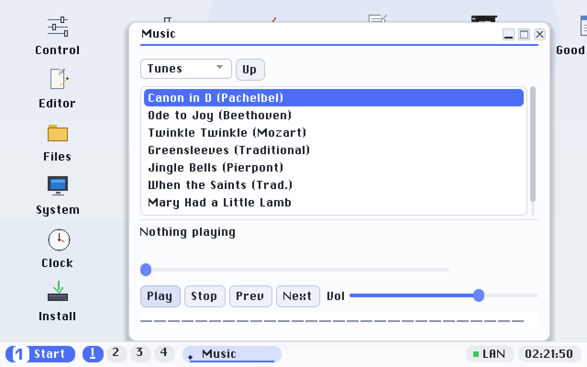
The games, Music and Tracker all make sound - through the machine's HD Audio or AC'97 audio hardware on modern PCs (which have no PC speaker), with the classic PC-speaker beep as the fallback on machines that still have one. The Control Panel's Volume slider sets the level.
Games
The classic games each run in their own window; Runner3D takes the whole screen (press Esc to come back to the desktop).
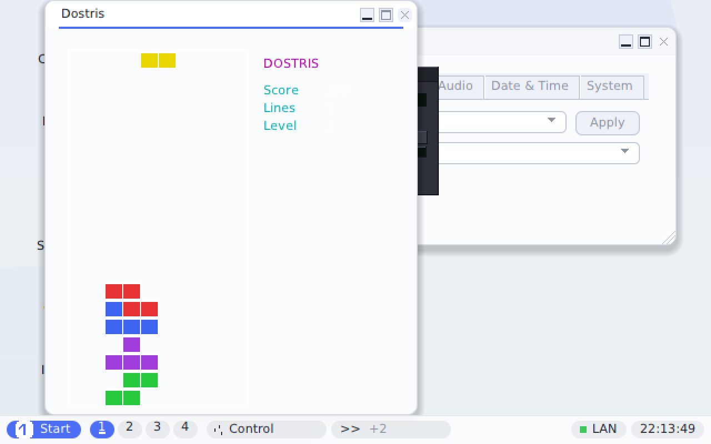
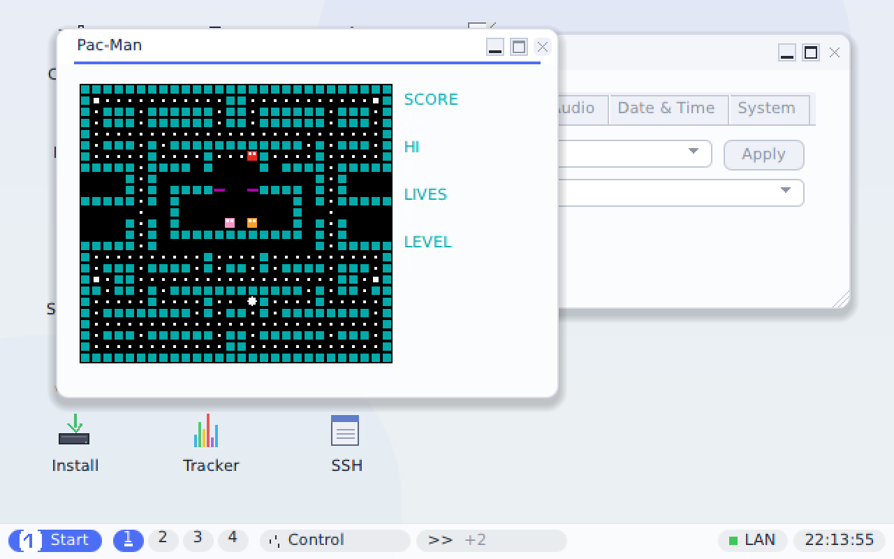
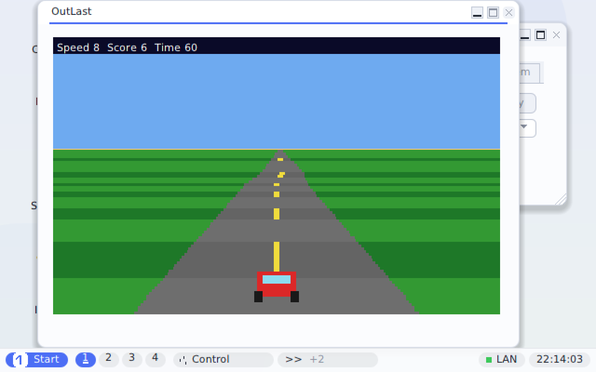
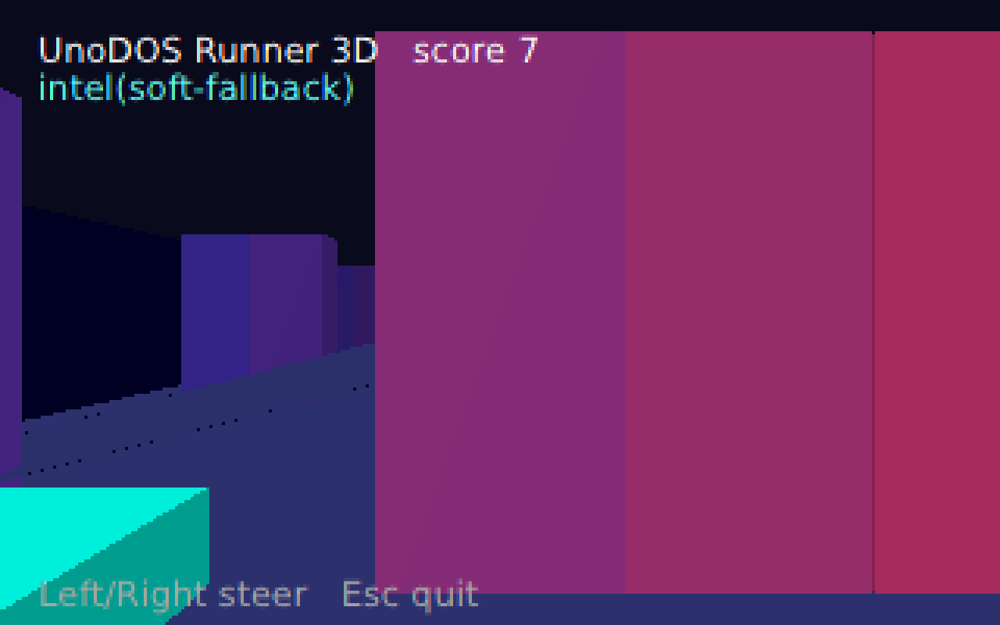
Apps live on the disk
The games and creative tools are not baked into the system: each one is a small
.UNO file in the APPS folder of the UnoDOS disk, loaded the first time you
open it. Installing UnoDOS onto a PC copies them along automatically. If an app's file is missing,
its window simply says so - nothing crashes.